Destination 2040: Needs Assessment
Every four years the Boston Metropolitan Planning Organization conducts a Needs Assessment to inform decisions about the allocation of federal transportation dollars in the Long-Range Transportation Plan. As a GIS Programmer/Analyst for the Central Transportation Planning Staff I helped update, run, and analyze the region's four-step travel demand model. Many of the model inputs and results are presented in Chapter 6 and 8 of the Destination 2040 Needs Assessment, which was approved in August 2019.
The full document can be accessed here. Below are examples of the some of the maps and tables I helped produce.
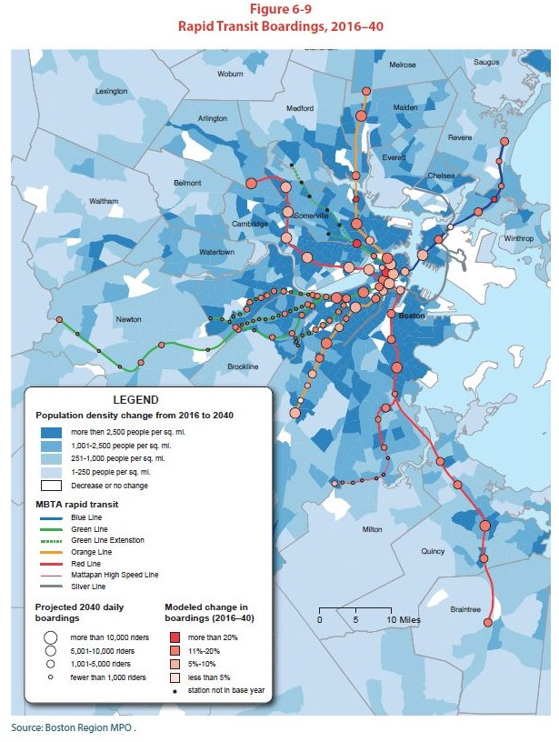
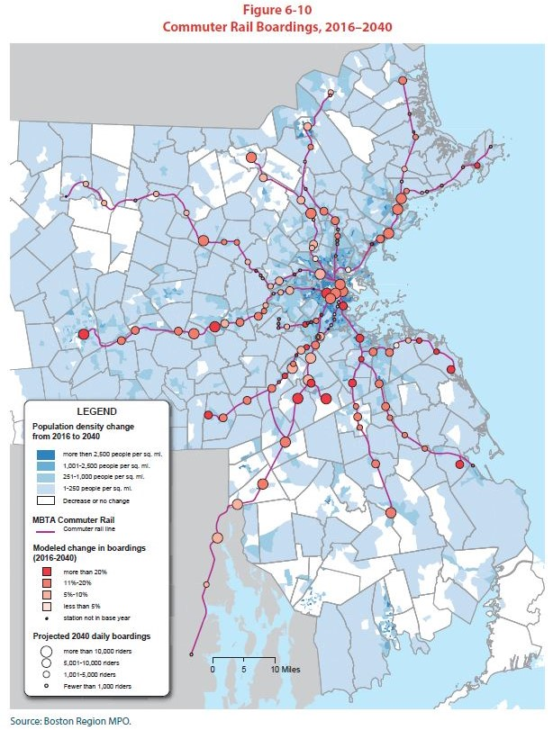
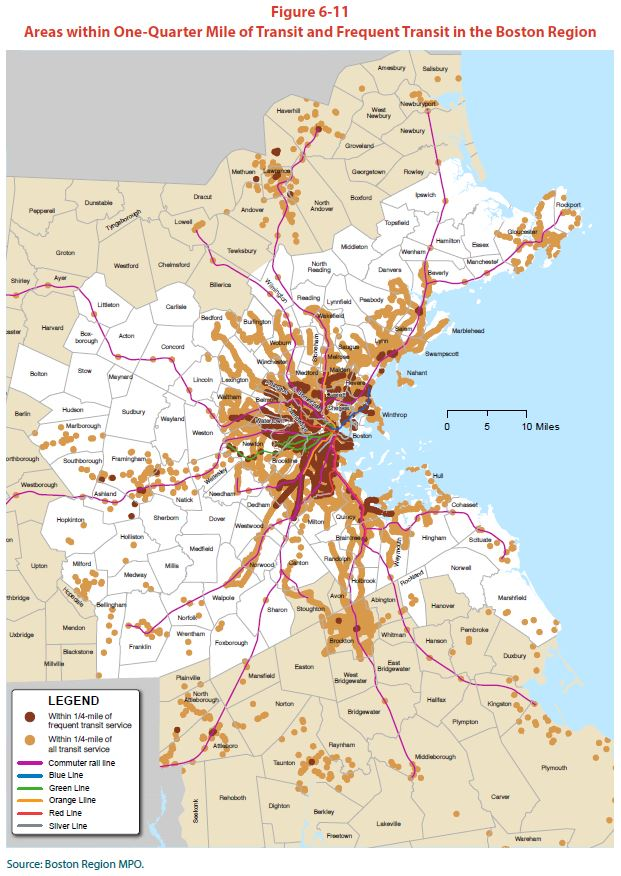 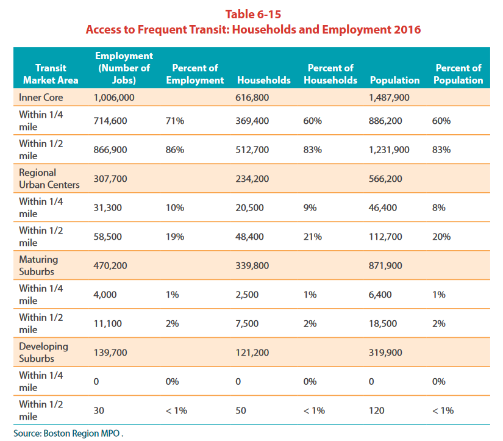
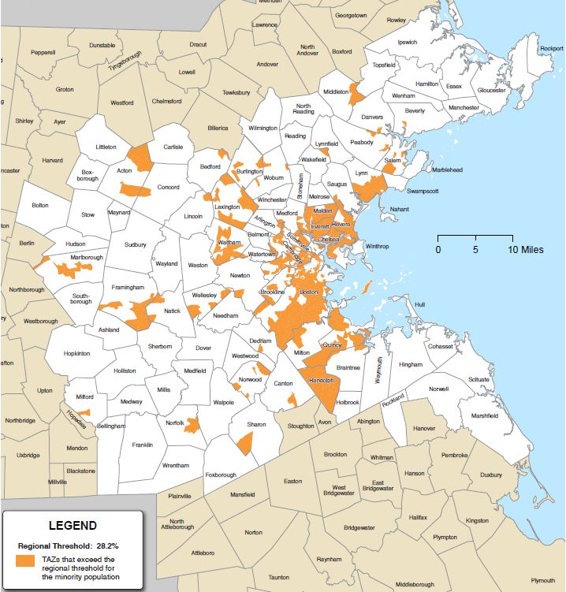 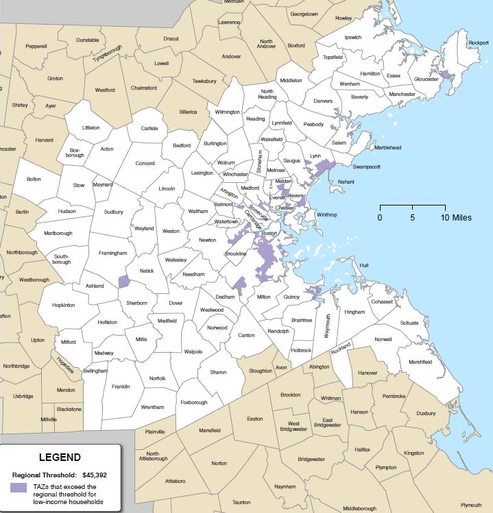 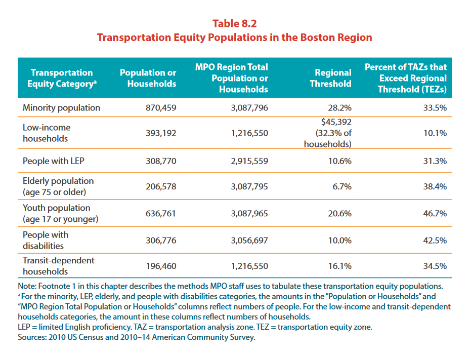
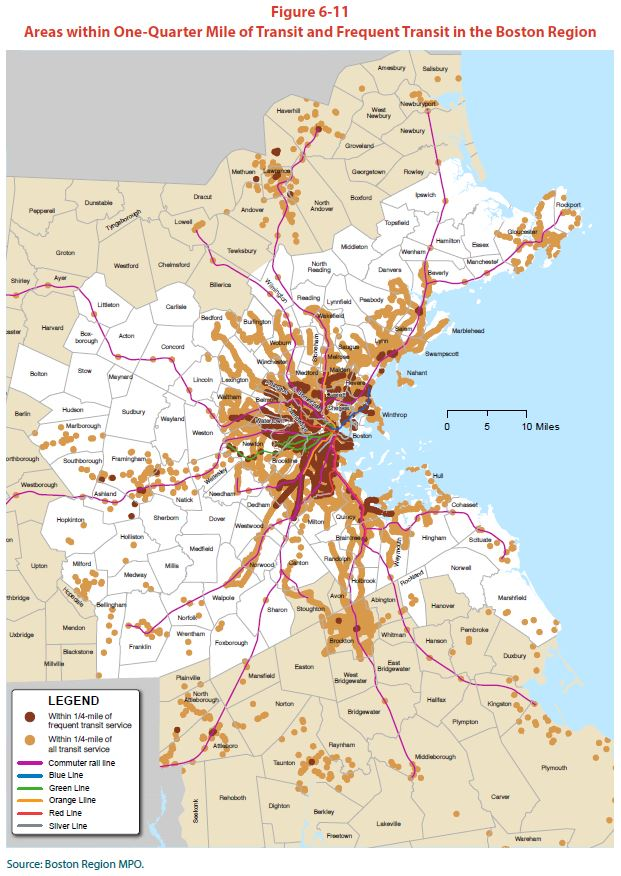 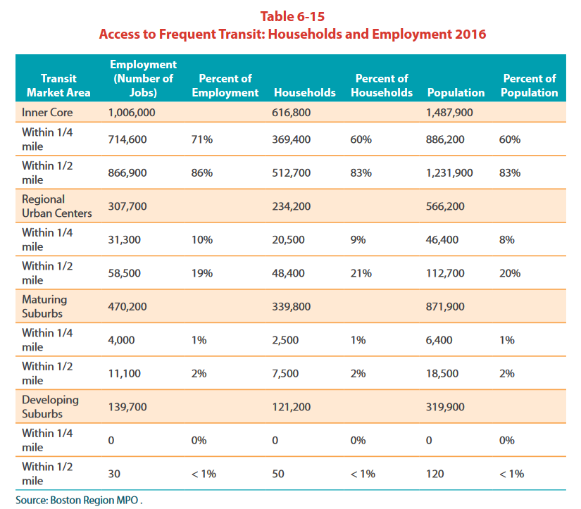
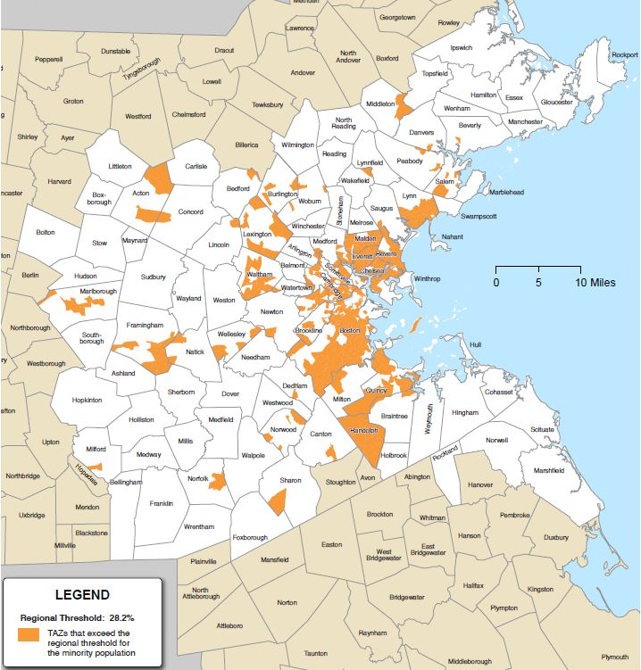 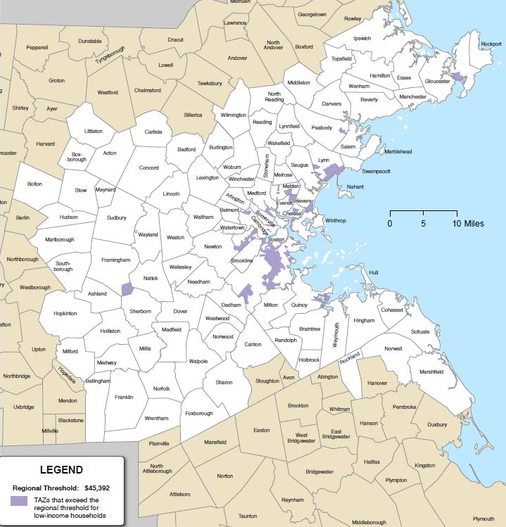 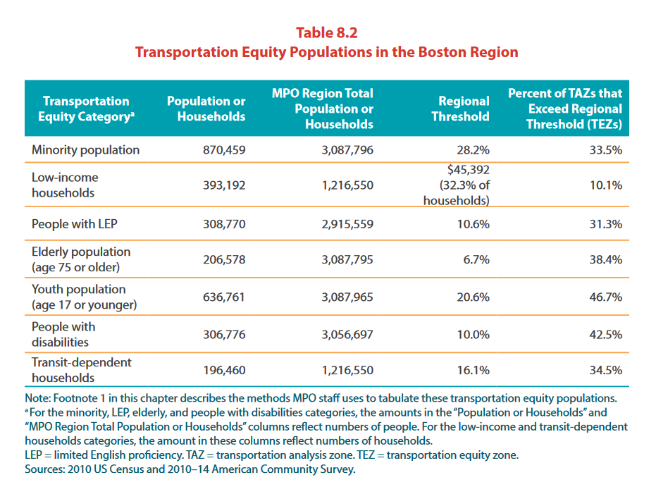